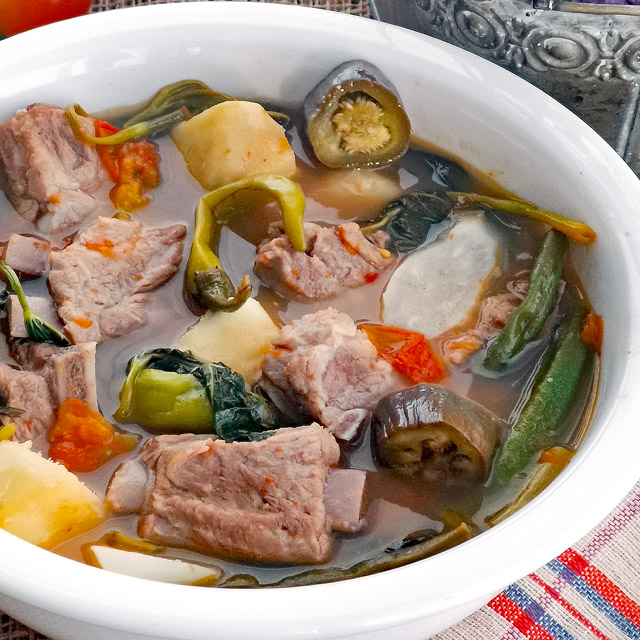

Sinigang na Pork Recipe

Description
- 1 kg pork belly or ribs, cut into pieces
- 1 onion, quartered
- 2 tomatoes, quartered
- 8 cups water
- 1 radish, sliced
- 1 eggplant, sliced
- 1 bunch kangkong (water spinach)
- 100g tamarind paste or sinigang mix
- 2-3 green chili peppers
- Fish sauce to taste
Steps
- Boil pork with onion and tomatoes in water for 45 minutes or until tender.
- Add radish and cook until slightly tender.
- Add eggplant and green chili peppers. Simmer for 5 minutes.
- Stir in tamarind paste or sinigang mix. Adjust sourness as needed.
- Add kangkong and fish sauce to taste. Simmer for another 2 minutes. Serve hot.